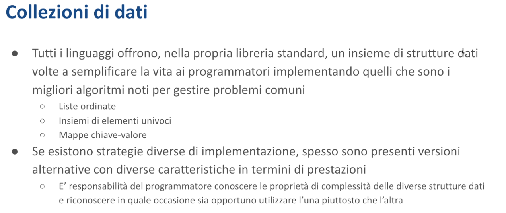

Collezioni di dati - Malnati 18
Indice
- 1. Introduzione
- 2. Tipi di contenitori
- 3. Caratteristiche delle Strutture Dati
- 4. Vec
- 5. VecDeque
- 6. LinkedList
- 7. Mappe
- 8. Insiemi
- 9. BinaryHeap (Priority Queue)
- 10. Riferimenti
1. Introduzione
1.1 Strutture Dati Standard
Vogliamo concentrarci un attimo sui tipi standard di contenitori che ci vengono messi a disposizione da Rust e sugli algoritmi connessi per poterli gestire. La maggior parte di questi tipi li conoscete, tutti quanti avete fatto l'esame di algoritmi e programmazione avanzata e lì vi hanno abbondantemente trattato per farvi capire una serie di cose. Tra le cose che vi dovrebbero essere riusciti a inculcare nella testa è il concetto di complessità degli algoritmi.
1.1.1 Differenze Operative
Perché? Perché a parità di problema io posso trovare delle soluzioni diverse che funzionalmente sono equivalenti ma operazionalmente non lo sono. Io posso tenere una sequenza di informazioni dentro un Vec o dentro una linked list. Entrambi sono dinamici, sono capaci di automaticamente allungarsi quanto serve per tenerne altri, sono capaci di contrarsi nel caso in cui serve, entrambi mi permettono di inserire all'inizio, a metà, e al fondo, ma il costo di queste operazioni è sostanzialmente diverso.
La scelta dell'uno piuttosto che dell'altro non è dettata da problemi funzionali, perché tutti hanno la stessa esatta identica funzionalità: permettono di gestire sequenze unbounded nei limiti della memoria disponibile.
La scelta la faccio in funzione del tipo di accesso. Se prevalentemente devo inserire in mezzo, il Vec non mi conviene, perché mi fa fare un mucchio di operazioni inutili, la linked list molto di più. Se in media devo accedere all'i-esimo elemento dove i non è noto a priori, il Vec è molto meglio, perché tenendo gli elementi compatti il costo di accedere al primo, al secondo, al centesimo elemento è sempre lo stesso — è quello semplicemente di calcolare l'offset rispetto all'inizio.
Mentre nella linked list io posso raggiungere il centesimo elemento solo camminando 100 volte, seguendo 100 jump dal primo, al secondo, al terzo, al quarto, fino al centesimo. E chiaramente quell'operazione lì dopo un po' mi sfianca, cioè perdo una montagna di tempo nell'andare in giro.
1.1.2 Tipi Fondamentali di Contenitori

Adesso ci concentriamo su questa cosa qua.
Di base tutti i linguaggi hanno questi tre fondamentali tipi:
- Liste ordinate: contenitori capaci di mantenere in modo ordinato una sequenza di cose
- Insiemi: contenitori disordinati che possono contenere un dato valore una volta sola
- Mappe: consentono di associare ad una chiave univoca un valore
1.1.3 Implementazioni Multiple
Ciascuno di queste tre categorie grosse di cose (poi ci sono ulteriori derivazioni, quando le vedremo: le deque, piuttosto che le queue, piuttosto che gli stack etc…) hanno possibilità di essere implementate in vario modo. Ad esempio, nel caso degli elementi ordinati, dei contenitori ordinati, io posso scegliere:
- Un algoritmo simile al
Vec: alloca blocchi contigui con elementi uno a fianco all'altro - Una linked list: elementi sparpagliati con puntatori al next e al previous
1.1.4 Scelta della Struttura Dati
Tocca al programmatore capire la complessità degli algoritmi associati alle strutture dati che sta usando e capire quando gli conviene usarne uno o quando gli conviene usarne l'altro. In Java voi avete la LinkedList e l'ArrayList. Tutti e due implementano l'interfaccia java.util.List, quindi sono identici dal punto di vista funzionale: hanno esattamente gli stessi metodi.
Il problema è che non hanno lo stesso comportamento a runtime, in termini di prestazioni. In certi algoritmi conviene molto la linked list, in altri conviene l'array list.
2. Tipi di contenitori

2.1 Array Dinamico
È un oggetto che, come un array, contiene un certo numero di elementi. Questi elementi sono contigui e sono garantiti a restare contigui. Si chiama dinamico perché, a differenza dell'array normale, che richiede al momento della sua creazione la definizione del numero di elementi che contiene (e il numero di elementi che contiene sarà sempre solo quello), l'array dinamico permette di avere un numero di elementi che cambia nel tempo, per cui lo posso allargare o lo posso contrarre.
Questa struttura ha delle caratteristiche fondamentali.
La prima, permette di inserire in coda a costo costante, a costo ammortizzato costante, perché? Perché il principio è che lui alloca un certo blocco, fin tanto che io cerco di inserire, questo blocco è solo parzialmente in uso e quindi l'inserimento costa zero (perché sposto solo un puntatore o incremento un numero o una cosa del genere), e quando arrivassi a saturarlo la prossima allocazione mi fa duplicare lo spazio, quindi io ho a un certo punto un saltino: il costo è basso, basso, basso, …, saltino, basso, basso, basso …
Qui la tecnica è che quando mi allargo raddoppio di dimensione, per cui i saltini all'inizio sono non tanto alti, perché ho poca roba da copiare, ma abbastanza frequenti e progressivamente via via che mi allargo sempre meno frequenti, i salti diventano sempre più alti perché quando passo da 1024 a 2048 devo spostare 1024 cose e quindi chiaramente mi costa di più che spostarne 16, in compenso poi per altri 1024 non mi costa più niente, poi arrivato a 2048 duplico di nuovo, quindi un salto ancora più alto, ma poi torno a stare tranquillo per altri 2048 elementi etc… e questo fa sì che il costo ammortizzato sia costante.
2.2 Coda a doppia entrata (o deque)
Le code a doppia entrata sono degli oggetti che permettono a ammortizzato costo costante di inserire in testa o in coda.
Nel Vec normale se io inserisco alla posizione 0 è costosissimo, perché li devo spostare tutti — immaginate di avere una pila di piatti alta alta: quanto vi costa aggiungerne uno in cima? Poco. Quanta fatica vi costa infilarlo sotto? Devo tirare su tutta la pila e farci entrare quell'altro — tanta fatica!
Nelle VecDeque quello che succede è che i piatti invece di tenerli in pila verticalmente, li metto orizzontalmente e quindi mi costa poco aggiungere da entrambi i lati, perché ho le estremità libere. Se devo inserire a metà ho sempre difficoltà perché li devo spostare. Questa struttura si chiama in modo diverso: in Rust si chiama VecDeque, in C si chiama deque, in Java si chiama ArrayDeque e in Python è un caso particolare della Package Collection che si chiama deque.
2.3 Lista doppiamente collegata
Le liste doppiamente collegate hanno un puntatore al next e al previous per ogni elemento. L'oggetto lista che fa da testa contiene il first e il last, permettendo rapidi inserimenti. Costa poco inserire a metà perché dovete solo sganciare due puntatori, inserire una cosa e riagganciarli. Facile, basta farlo nel modo giusto.
Viceversa, accedere all'i-esimo elemento dall'inizio vi costa attraversare tutti gli elementi precedenti. Questo esiste in Rust come LinkedList, in C++ come list, in Java come LinkedList, mentre in Python non esiste nella libreria standard.
2.4 Coda a priorità
Le code a priorità (Priority Queue) sono strutture in cui, quando aggiungo un elemento, questo "galleggia" automaticamente verso l'uscita in base alla sua priorità. Questo serve quando devo ordinare elementi non per ordine di inserimento, ma per contenuto!
Pensate al pronto soccorso: le persone arrivano nel tempo ma non sono curate nell'ordine di arrivo, bensì in base alla gravità — chi sta per morire ha precedenza su chi ha un taglietto. Al triage vi assegnano un codice (bianco, verde, giallo, rosso) che determina l'urgenza.
Questo in Rust si chiama BinaryHeap, in C e Java PriorityQueue, in Python heapq.
Queste sono tutte strutture lineari, funzionalmente diverse. Solo le liste doppiamente collegate e i Vec si sovrappongono funzionalmente, gli altri hanno metodi aggiuntivi.
2.5 Mappe
Le mappe sono collezioni di chiavi univoche associate a valori. Le chiavi devono essere:
- immutabili
- confrontabili (per determinare l'uguaglianza)
- a seconda dell'implementazione: ordinabili o hashable
Ci sono due modi principali di implementare le mappe:
- Con tabelle hash, sfruttando chiavi hashable
- Con binary tree — alberi bilanciati dove ogni nodo ha due figli:
- Il figlio sinistro ha chiavi minori della chiave del nodo
- Il figlio destro ha chiavi maggiori della chiave del nodo
I B-tree si mantengono sempre il più bilanciati possibile: se un ramo diventa troppo pesante, l'albero si riorganizza per bilanciare il peso dei rami. Questo rende il costo della ricerca omogeneo indipendentemente dal percorso seguito.
Questo fa sì che gli inserimenti nei B-tree siano una cosa complicata, perché portano alla ristrutturazione dell'albero. Altrimenti se io inserisco le cose tutte ordinate a partire dal più piccolo, partirei inizialmente dall'albero vuoto, il primo elemento che metto è la radice, il secondo glielo appendo da un lato, poi appendo dallo stesso lato, poi ancora dallo stesso lato, e così via, e questa cosa diventerebbe inefficientissima, perché si trasforma in una lista.
Di conseguenza, appena arrivo ad inserire il terzo, quell'albero mi fa un pezzo di giro, si ribalta e sceglie come radice non più l'elemento che ho inserito per il primo, ma il secondo, e a quel punto lì il secondo ne ha uno a destra e uno a sinistra, e va meglio.
Se vado avanti ad inserire ancora sempre uno che starebbe sempre dalla destra, lui dopo un po' si ribalta di nuovo e va avanti in questo modo per garantirmi una lettura più o meno uniforme. Quindi quell'algoritmo lì è complicato da implementare. Mi garantisce un tempo di accesso alla chiave i-esima pari al logaritmo in base 2 del numero di chiavi presenti. Mentre quando scelgo l'algoritmo di hashing, l'accesso all'i-esimo elemento è circa costante, circa, dipende da quanti conflitti di hash ho.
Di base la tabella hash ha associato a ciascuna chiave un valore. I set sono semplicemente delle tabelle hash o dei B-tree dove non c'è il valore, dove l'unica cosa che guardo è la chiave. La chiave, se c'è, è presente una volta sola. Quindi gli hash sono, in tutti i linguaggi, implementati in questa maniera qua, come delle hash map il cui valore non è presente.
Le hash map esistono in Java, in C, in C++ con nomi diversi, si chiamano HashMap in Rust, unordered_map in C++, HashMap in Java, dict in Python.
Le mappe binarie basate sui B-tree, in Rust si chiamano BTreeMap, in C++ si chiamano map semplicemente, in Java si chiamano TreeMap, in Python non esistono nella libreria standard.
Ed infine gli insiemi hash si chiamano HashSet su Rust, unordered_set su C++, HashSet in Java, set in Python, e di nuovo il corrispondente basato sui B-tree, BTreeSet in Rust, set in C++ e TreeSet in Java.
3. Caratteristiche delle Strutture Dati

Qui sono segnato quattro operazioni fondamentali:
- Quanto costa accedere all'i-esimo elemento
- Quanto costa cercare se è presente un certo elemento
- Quanto costa inserire
- Quanto costa cancellare
Adesso inserire è un po' una fregatura, perché dipende da dove inserisco. I numeri che qua sono riportati considerano l'inserimento in una posizione non ottimale. Chiaro che l’arrray dinamico se l'inserisco in coda è O(1). Qui consideriamo l'inserimento in una posizione arbitraria.
Allora vediamo che ci sono degli aspetti duali: l’array dinamico ha costo di accesso O(1) in una posizione arbitraria, perché siccome gli elementi sono contigui, io vado direttamente a quella posizione lì e sono tranquillo, mentre la lista doppiamente collegata a costo O(n), se devo raggiungere la posizione n-esima.
Al contrario, se sono già nella posizione n-esima e devo inserire, l’inserimento mi costa O(1) nella lista doppiamente collegata, perché sono già lì: smonto, attacco i puntatori e li riaggancio. Nell’array dinamico invece devo prendere tutti quelli che mi seguono e spostarli avanti di un passo. E questo può essere più o meno oneroso.
Nelle code a doppia entrata io ho dei costi unitari in cima e al fondo e ho dei costi O(n) quando inserisco a metà, perché devo fare un po' di spazio a destra o a sinistra, a secondo di come viene meglio.
Le tabelle hash mediamente hanno costo unitario, in modo amortizzato. Gli algoritmi di hash dipendono da quante collisioni si verificano. Se l'algoritmo di hashing è molto buono, mi spande su un range molto grande e quindi rende le collisioni poco probabili. Nel momento in cui l'algoritmo di hash fosse fatto male, ad esempio se io implemento come algoritmo di hash una costante, tutti i valori hanno come hash code sempre 3 e tutti confliggono e quindi le tabelle di hash diventano delle liste ordinate, costosissime.
3.1 Complessità Computazionale

Quando diciamo che certe cose sono O(1), O(n), o O(log n), cosa vogliamo dire? Vogliamo dire che al crescere della dimensione dei dati io avrò dei costi progressivamente più grandi. Ma grandi come?
- O(1): costo costante
- O(log n): cresce lentamente
- O(n): cresce con pendenza costante
- O(n log n): sale più di n, ma non verticalmente
- O(n²): parabola
- O(n³): parabola ancora più stretta
Già solo vedere l'algoritmo quadratico, O(n²), ci fa capire molto in fretta che se noi abbiamo scritto un algoritmo quadratico quella roba lì diventa rapidamente inusabile. Perché per poco che aumentiamo la dimensione dei nostri dati, i tempi schizzano e diventano inaccettabili. Quindi bisogna fare molta attenzione a come noi scriviamo le cose.
Se mi chiedo quali sono gli elementi del gruppo A che sono anche presenti nel gruppo B e mi metto a confrontare tutti gli A con tutti i B, faccio necessariamente un algoritmo quadratico. Perché devo prendere tutti gli A uno alla volta e mi chiedo: “tu sei uguale al primo dei B?”, “sei uguale al secondo?”, “sei uguale al terzo?”, e così via… Poi prendo il secondo degli A, e riparto: chiedo “sei uguale al primo dei B?” etc… un algoritmo del genere viene quadratico.
Finché quei due insiemi sono piccolini chi se ne frega, ma quando quei due insiemi cominciano a diventare cento da una parte e cento dall'altra il prodotto fa diecimila. Se sono mille di qua e mille di là diventa un milione. Capite che i tempi si allungano in fretta e diventano ingestibili.
Per questo usiamo le strutture dati. Le strutture dati sono pensate per permetterci degli accessi opportuni. In certe situazioni noi teniamo le stesse informazioni rappresentate in tredici modi diversi.
Perché? Perché ci serve una mappa per accedere in fretta al dato se conosco una certa cosa. Ci serve una lista per poter accedere in fretta se conosco la sua posizione. Ci serve magari una priority queue per trovare quali di questi è quello più importante in un certo momento.
Quindi può essere conveniente in certi casi, per evitare di far diventare l'algoritmo ingestibile, dire che io moltiplico le rappresentazioni del mio dato. Lo tengo in contenitori diversi. Ovviamente lo devo tenere allineato: tutte le volte che aggiungo un nuovo pezzettino lo devo aggiungere in tutti i contenitori, tutte le volte che cancello un pezzettino lo devo cancellare da tutti i contenitori. Perché la struttura deve rimanere coerente. Così sono tranquillo che posso trovare le mie informazioni.

Limitandoci a Rust, tutte le diverse strutture dati (quindi Vec, LinkedList, HashMap, HashSet etc…) hanno una serie di metodi che condividono, che rendono l'uso di queste strutture facile. Tutte contengono new che dice "crea una nuova collezione vuota".
Tutte hanno len che mi dice quanti elementi sono presenti in questa collezione.
Tutte hanno clear che dice "qualunque cosa ci sia dentro buttala via e parti vuota".
is_empty è l'equivalente di len == 0 (cioè “la collezione è vuota?” — is_empty restituisce true se non c'è niente, false se c'è qualcosa).
Tutte hanno iter, cioè la possibilità di esplorare quello che c'è dentro.
Notate che non tutte hanno into_iter perché mentre io posso sbriciolare un array non posso sbriciolare una mappa. Perché per come la mappa è implementata in Rust, sbriciolarla sarebbe un grosso problema, la HashMap soprattutto.
Dopodiché tutte quante hanno i tratti IntoIterator e FromIterator.
Il tratto IntoIterator mi permette, data una collezione, di ricavare l'iteratore relativo.
Il FromIterator al contrario dice: dato un iteratore, riempi questa collezione con i dati che vengono.
4. Vec

Vec è il tipo assolutamente più fondamentale da usare in Rust, lo abbiamo usato tante volte, è il cavallo da lavoro di Rust. Tutto Rust è stato progettato attorno a Vec, Vec è estremamente ottimizzato, le scelte che sono state fatte al suo interno tendono a essere il meglio possibile perché sostituisce completamente il concetto di allocatore — in Rust non abbiamo l'equivalente della malloc, almeno nel Rust safe (nell'unsafe certamente sì), ma di base se ci serve allocare della memoria l'unico metodo più efficace possibile che è stato limato in tutti i modi nei vari sistemi operativi eccetera, è creare un Vec!
E quel Vec lì è capace di allocare un blocco di una certa dimensione.
Posso creare un Vec in tanti modi: certamente con il new, Vec::new me ne crea uno vuoto.
Posso usare la macro vec![...] e mi genera un vettore che è pre-inizializzato con quella cosa lì.
Posso creare un Vec con i costruttori derivati, con un with_capacity, ad esempio questo mi prepara un Vec che ha preallocato un array di una certa dimensione.
Il Vec with_capacity è quello che mi permette di sostituire sostanzialmente la malloc perché mi dà accesso a un blocco che posso dire grande quanto mi pare.
Internamente abbiamo già visto un Vec ha tre valori privati: c'è un puntatore sullo heap che può essere nullo nel momento in cui il Vec è completamente vuoto; se non è nullo punta un blocco la cui dimensione è specificato dal campo capacity che è privato, e di quel campo capacity size elementi (con size minore o uguale a capacity) sono in uso, e la parte restante è libera, pronta a essere usata.
Questo è il principale strumento per la gestione dei dati.

Posso inserire degli elementi dentro il vettore facilmente con il metodo push che inserisce al fondo.
Ci sono anche dei metodi che mi permettono di inserire a una posizione che non sia il fondo. Attenzione: se io gli indico di inserire ad una posizione che attualmente non è dell'array (e quindi gli dico l'array ha tre elementi e io chiedo di inserire alla posizione 7) i metodi panicano.
Quello che lui sa è che se io cerco di aggiungere al fondo finché la capacity glielo consente occupa un pezzo dello spazio che si è già preso. Nel momento in cui si trovasse ad aver riempito tutto lo spazio che avevamo richiesto e non gli basta più, internamente fa partire un processo di riallocazione — quindi chiede al sistema operativo un blocco grosso il doppio dell'originale, muove tutto quello che ha nel nuovo blocco, libera il vecchio blocco e aggiunge l'elemento aggiuntivo nel primo spazio libero che si è venuto a creare.
Possiamo usare la notazione con le [] per accedere all'i-esimo elemento e farci dare un reference lì dentro, oppure possiamo usare i metodi get e get_mut che ci danno rispettivamente un reference all'i-esimo e un reference mutabile.
Nota: get e get_mut ci danno un Option, nel senso che se l'indice i che indichiamo è farlocco ci danno None. Viceversa se l'indice i è buono ci danno Some e all'interno di Some c'è scritto il riferimento vero e proprio. Mentre se usiamo le parentesi quadre, come anticipato prima, queste danno panic se l’indice non è valido.

Qui c'è una lista di metodi che Vec offre, più o meno li conosciamo già tutti:
with_capacity: alloca un vettore con una certa capacitàcapacity: ci dice qual è la capacità corrente del nostro vettorepush: aggiunge al fondopop: torna l'ultimo elemento sotto forma diOptionche può essereSomedi qualcosa se il nostro vettore aveva un ultimo elemento,Nonese il nostro vettore era vuotoinsert: cerca di inserire alla posizione indicata il valore (se la posizione indicata è illecita panica)remove: cerca di togliere l'elemento dalla posizione indicata (se anche questa non va, panica)first/last: ci permettono di avere un riferimento al primo/ultimo elementoget: ci permette anche una versione che accetta come parametro un range (es: da 1 a 7), cerca di prendere lo slice, ci restituisce il riferimento allo slice lì dentro sotto forma diOption

Il vincolo per creare un Vec è che i dati contenuti al suo interno devono essere dello stesso tipo: noi creiamo dei Vec di i32, dei Vec di String, dei Vec di qualcos'altro, ma c'è omogeneità — il tipo è Vec<T>, quindi tutto deve essere pari al tipo T.
5. VecDeque

Il tipo VecDeque è un tipo che merita un secondo di ragionamento, perché l'implementazione che è stata fatta dentro Rust, pur garantendo lo stesso comportamento funzionale, è sostanzialmente diverso da quello che è stato fatto in C++.
Un VecDeque, in C++, lo possiamo immaginare come una LinkedList di Vector, quindi io ho un buffer di una certa dimensione che ha un puntatore a quello che viene dopo e un puntatore a quello che viene prima.
Ho questa catena di buffer più o meno grande, e se devo inserire vado sull'ultimo e inserisco nel buffer, se posso. Se invece lui ha già raggiunto il massimo della sua capacità, ne alloco uno ulteriore a valle. Se devo inserire in testa guardo il primo della mia catena: se ha spazio in testa inserisco direttamente lì, se no ne alloco uno precedente e estendo ulteriormente il VecDeque. Così è come funzionano le cose in C++.
La scelta di Rust è stata un'altra completamente — quella cosa lì è complicata da far funzionare bene in modo safe per darsi garanzie delle cose e quindi Rust riduce il VecDeque a un Vec. Quindi internamente è un Vec, solo che invece di popolarlo dall'indice 0 a crescere fino all'n, lo tratta come un buffer circolare.
Inizialmente abbiamo un buffer vuoto con una capacità di 32 elementi. Quando inseriamo il primo elemento, lo mettiamo in posizione 0, e quando ne aggiungiamo un altro in coda, va in posizione 1. Se dobbiamo inserire un elemento in testa — mentre un Vec normale dovrebbe spostare i due elementi esistenti di una posizione per fare spazio — il buffer circolare lo gestisce diversamente: avendo un elemento in 0 e uno in 1, mette il nuovo elemento in posizione 31, che diventa l'inizio. Un altro elemento in testa? Va in posizione 30. A questo punto abbiamo libere le posizioni dalla 2 alla 29 — se aggiungiamo in coda, usiamo la posizione 2, poi la 3 e così via.
Ad un certo punto questi due estremi si toccano, non mi sta più né in testa né in coda, che faccio? Duplico — prima era lungo 32, ne alloco uno da 64 e a quel punto me li piazzo comodi, quindi me li sposto tutti quanti in modo che comincino da 1 a 32 e ripeto così.
Quindi il VecDeque internamente è di fatto un Vec, semplicemente che questo Vec invece di assumere che comincia sempre alla posizione 0, può cominciare a una posizione qualunque perché è trattato da buffer circolare.
Di fatto quindi ha un indice in più, infatti da questo punto di vista ha un campo interno in più rispetto all'altro, perché gli dice first e last, che gli permette di capire se c'è ancora spazio. Nel momento in cui non c'è più spazio perché i due indici sono arrivati a toccarsi, si rialloca, ne prende uno più grande e lo spazio si crea automaticamente.
Ci garantisce che gli elementi sono collettivamente tutti nel suo buffer, ma non sono necessariamente contigui, perché io ne posso avere una parte all'inizio e una parte sul fondo. C'è un metodo che possiamo chiamare, che lui chiama automaticamente quando si allarga, che è make_contiguous, che se è diviso in due parti prima e dopo sposta in modo da appiccicarli.
6. LinkedList

LinkedList è ottimale in quelle situazioni in cui abbiamo bisogno di mantenere un ordine e inserire a metà. Inserire tipicamente nel contesto di qualche iterazione. I metodi che LinkedList offre sono scarsi, non è un granché, i signori di Rust non hanno fatto grossi sforzi per implementare LinkedList e ci dicono "guarda, se puoi evitala". Perché mentre Vec è il massimo dell'ottimizzazione, LinkedList è una schifezza, quindi in termini prestazionali è assai bassa.
7. Mappe

Due implementazioni possibili, HashMap e BTreeMap.
HashMap
- costo costante di accesso
- richiede che la chiave abbia un algoritmo di hash associato
Quindi la chiave, il tipo K che noi usiamo per rappresentare la chiave, deve avere il tratto Hash e anche il tratto Eq.
Perché? Perché se io ho due oggetti che mi danno lo stesso hash code, devo poter chiedermi se sono anche uguali tra di loro oppure no, per decidere se è una collisione oppure se ho beccato l'elemento giusto.
BTreeMap
Nel momento in cui so di avere chiavi che hanno un ordine naturale, può essere conveniente usare una BTreeMap. Questo può essere utile se come chiavi ad esempio ho delle stringhe, o a volte i numeri, perché per certi aspetti posso avere alcune facilitazioni. In ogni caso la chiave deve essere univoca e immutabile. Non va bene avere una chiave che possa cambiare perché spaccherebbe tutti gli algoritmi.
7.1 API delle Mappe in Rust

Attenzione, le mappe in Rust hanno un API che è totalmente diversa dalla implementazione che è presente altrove. La mappa possiede sia le chiavi che i valori. Siccome capire dove andare a mettere un'eventuale chiave se ancora non ce l'ho è un'operazione delicata, Map mi offre un API che è ottimizzata per far sì che se io cerco di inserire qualcosa che non c'è, lui questa ricerca la faccia una volta sola. Ma non è ovvio com'è fatta, quindi ci spendiamo due parole sopra per andare a vedere.

Di base io posso chiedermi se un elemento c'è o non c'è attraverso il metodo entry.
entry prende una chiave e mi restituisce un oggetto di tipo "Entry" con la E maiuscola.
Può darsi che quella chiave lì nella mappa ci sia oppure che non ci sia. Di conseguenza l'oggetto Entry mi offre due metodi. and_modify che dice "nel caso in cui ce l'ho ti lascio fare dei cambiamenti, nel caso in cui io non ce l'abbia te lo faccio cambiare".
7.1.1 Esempio Pratico
Qui c'è l'esempio banale in cui voglio contare quante volte una certa parola compare in un certo testo. Per sapere quante volte una parola compare in un certo testo, parto con una mappa che è inizialmente vuota. Questa mappa avrà come chiavi le singole parole e come valori dei numeri. Inizialmente la mappa è vuota.
Nel momento in cui io comincio a leggere il mio testo, prendo la prima parola e mi chiedo "questa qua c'è nella mappa?".
Allora, nei linguaggi Java, Python, e altri, quello che farei è un'operazione del tipo if map.getKey(myWord) map[key] += 1 → Cioè mi chiedo "ce l'ho questa chiave? Sì". Allora accedo al valore e lo incremento.
else map(key)=1 → Non ce l'ho, allora creo una entry.
Questo mi permette di popolare la mappa.
Piccolo problema: fatto così, io nei due casi rischio in due volte di andarmi a cercare qual è la chiave su cui devo operare.
Invece, vediamo che in Rust, come da slide, .entry dice "vai a vedere se questa cosa c'è" — se la trovi, a questo punto puoi modificarla col metodo and_modify o inserirla con insert. and_modify prende una lambda che mi permette di ricevere il valore e mi permette di descrivere come aggiorno il valore (In questo caso *v+=1. Prendo un ref_mut al valore). Altrimenti, insert mi dà la possibilità di dire cosa mettere, quindi la chiave verrà inserita lì dentro.

È importante capire questo concetto.
Le mappe le posso creare a partire da tuple. HashMap::from prende in questo caso un array di tuple dove il primo elemento della tupla è la chiave e il secondo elemento è il valore. Dopodiché io qui vado a cercare se c'è una certa chiave di cui voglio modificare il valore.
Notate che non sono obbligato a fare, dato una entry, sempre sia l'and_modify che lo insert. Ad esempio qui all’istruzione scores.entry("Carol").and_modify() — se per caso ho "Carol" tra i miei valori, cambio qualcosa. Se non ce l'ho non faccio niente, va tutto bene.
Ho la possibilità di trasformare la mia mappa in qualcos'altro. In into_iter() — la sbriciolo e collect().
Poi ordino per valore, sort_by_key(), perché a questo punto io ho trasformato il mio vettore in tuple.
Le mappe non si possono ordinare direttamente, poiché la mappa gestisce la propria struttura interna in modo autonomo. Quando si itera su una mappa, gli elementi vengono restituiti nell'ordine determinato dall'algoritmo interno della mappa, che non corrisponde necessariamente all'ordine di inserimento. Per esempio, se inseriamo gli elementi con chiave 1, chiave 2, chiave 3, potremmo ottenere chiave 3, chiave 1, chiave 2, in base alla funzione di hash utilizzata.
8. Insiemi

Gli insiemi (Sets) sono abbastanza simili alle mappe: sono proprio implementati come mappe in cui non c'è il valore, c'è solo la chiave.
9. BinaryHeap (Priority Queue)

Priority queue, qui si chiamano BinaryHeap.
Binary heap ammette soltanto oggetti che siano ordinabili e li tiene dal più grande al più piccolo. Chiaramente qui conviene mettere degli oggetti in cui si implementa il tratto Ord in modo coerente con il concetto di priorità che vogliamo dare. In prima posizione c'è sempre il più grande e a seguire quelli via via più piccoli. Possiamo guardare che cosa c'è all'interno con peek() e cose del genere.
10. Riferimenti